# 先读取数据
data21_3 <- foreign::read.spss("datasets/例21-03.sav",
reencode = "gbk",to.data.frame = T)
str(data21_3)
## 'data.frame': 10 obs. of 8 variables:
## $ 编号: num 1 2 3 4 5 6 7 8 9 10
## $ x1 : num 145 146 146 147 148 ...
## $ x2 : num 8.3 7.81 7.65 7.83 7.95 8.29 8.22 7.14 7.83 8.21
## $ x3 : num 60 62 61.5 61 61 62 61.8 61 62 62.5
## $ x4 : num 9.35 9.56 9.69 9.73 9.68 9.86 9.72 9.8 9.6 9.68
## $ x5 : num 0.58 0.63 0.66 0.7 0.7 0.68 0.72 0.77 0.8 0.81
## $ x6 : num 0.042 0.046 0.058 0.052 0.056 0.054 0.064 0.069 0.07 0.071
## $ x7 : num 5.6 6 6.3 6.43 6.76 7.1 6.93 7.42 7.7 7.75
## - attr(*, "variable.labels")= Named chr [1:8] "" "800米跑" "立定三级跳远" "仰卧起坐" ...
## ..- attr(*, "names")= chr [1:8] "编号" "x1" "x2" "x3" ...
## - attr(*, "codepage")= int 936
head(data21_3)
## 编号 x1 x2 x3 x4 x5 x6 x7
## 1 1 145.03 8.30 60.0 9.35 0.58 0.042 5.60
## 2 2 146.25 7.81 62.0 9.56 0.63 0.046 6.00
## 3 3 146.13 7.65 61.5 9.69 0.66 0.058 6.30
## 4 4 147.13 7.83 61.0 9.73 0.70 0.052 6.43
## 5 5 148.34 7.95 61.0 9.68 0.70 0.056 6.76
## 6 6 149.20 8.29 62.0 9.86 0.68 0.054 7.1027 聚类分析
聚类分析（clusteranalysis）是研究如何将样品或变量进行分类的一种方法，也是一种多元分析方法。与判别分析相比，前者是在已知分为若干个类的前提下，判定观察对象的归属，而后者是在不知道应分多少类合适的情况下，试图借助数理统计的方法用已收集到的资料找出研究对象的适当归类方法。
聚类分析属于探索性统计分析方法，按照分类目的可分为两大类。例如，测量了n个病例（样品）的m个变量（指标），可进行：
- Q型聚类：又称指标聚类，是指将m个指标归类的方法，其目的是指标降维，从而选择有代表性的指标。
- R型聚类：又称样品聚类，是指将n个样品归类的方法，其目的是找出样品间的共性。
无论是R型聚类或是Q型聚类的关键是如何定义相似性，即如何把相似性数量化。聚类的第一步需要给出两个指标或两个样品间相似性的度量–相似系数（similarity coefficient）的定义。
27.1 层次聚类
系统聚类又称为层次聚类（Hierarchical clustering），其聚类过程如下：
- 开始将各个样品或变量独自视为一类，即各类只含一个样品或变量，计算类间相似系数矩阵，其中的元素是样品或变量间的相似系数。相似系数矩阵是对称矩阵。
- 将相似系数最大（距离最小或相关系数最大）的两类合并成新类，计算新类与其余类间相似系数。
- 重复第二步，直至全部样品或变量被并为一类。
以上步骤，在R语言中就只是几行代码而已！
孙振球《医学统计学》第4版例21-3：现对10名女排运动员的7项运动指标进行测定，分别为800m跑、立定三级跳远、仰卧起坐、3m折返跑、思维灵敏性、运动知觉和适竞感的时间，用X1～X7表示。试用系统聚类法将10名运动员归类。
在进行聚类前，我们需要对数据进行标准化，以消除量纲和变异系数大幅波动的影响，然后需要计算距离矩阵，也就是计算样本间的相异性：
# 聚类前先进行标准化
data21_3_scaled <- scale(data21_3[,-1])
# 计算距离矩阵
d <- dist(data21_3_scaled, method = "euclidean") # 选择欧氏距离
d # d是一个下三角矩阵，数值越大，说明样品间差异越大
## 1 2 3 4 5 6 7 8
## 2 3.592358
## 3 4.272990 1.804924
## 4 4.143581 2.274618 1.336413
## 5 4.342220 2.662177 1.850573 1.027911
## 6 5.788827 3.524477 3.077035 2.579150 2.224375
## 7 5.647737 3.602812 2.962448 2.570148 1.812423 1.596884
## 8 7.266005 5.215734 3.946548 3.690478 3.316503 4.110552 3.456885
## 9 6.400557 4.252172 3.400982 3.367790 2.785925 3.328457 2.297697 3.094335
## 10 6.897907 4.673395 3.967999 3.877455 3.321650 3.018358 2.218549 4.004878
## 9
## 2
## 3
## 4
## 5
## 6
## 7
## 8
## 9
## 10 1.391110计算距离矩阵有多种方法，各种方法总结如下：
| 方法名称 | 定义 | 特点 | 适用场景 |
|---|---|---|---|
| “euclidean” (欧几里得距离) | 计算两点之间的直线距离，即各维度差值平方和的平方根。 | 最直观的距离。对变量的量纲（单位）非常敏感，若变量单位不同需先标准化。是dist()的默认方法。 |
适用于连续型数值数据，且各变量量纲一致或已标准化的情况。常用于几何结构明显的聚类。 |
| “manhattan” (曼哈顿距离) | 计算两点在标准坐标系上的绝对轴距总和（城市街区距离）。 | 对异常值的敏感度低于欧氏距离。在高维空间中表现有时优于欧氏距离。 | 适用于高维数据，或当数据中存在较多离群点，希望降低其影响时。 |
| “maximum” (切比雪夫距离) | 计算两点各坐标数值差绝对值的最大值。 | 只关注最极端的差异维度。即使其他维度很相似，只要一个维度差异大，距离就大。 | 适用于国际象棋（车的移动）计算，或需要关注“最大差异”作为瓶颈的工程、优化问题。 |
| “canberra” (堪培拉距离) | 类似于加权的曼哈顿距离，对靠近原点的差异进行放大。 | 对接近0的数据点非常敏感。强调相对差异而非绝对差异。 | 常用于生态学、环境科学数据，或当关注数据相对于原点的相对变化时。 |
| “binary” (二元距离) | 专门针对二值变量（0和1）的距离，基于匹配度计算。 | 只考虑非零匹配的情况。将数据视为集合，计算不对称的差异。 | 仅适用于纯二元数据（如：存在/不存在、是/否）。 |
| “minkowski” (闵可夫斯基距离) | 一种广义距离度量，通过参数p控制距离类型（p为参数，需指定）。 |
通用公式。当p=1时为曼哈顿距离，p=2时为欧氏距离。灵活性高，但需要调参。 |
当需要灵活调整距离计算逻辑，或在算法优化中寻找最佳p值时使用。 |
层次聚类在R语言中非常简单，通过hclust即可实现，下面使用3种方法对该数据进行聚类分析：
hc_complete <- hclust(d,method = "complete") # 最小相似系数法
hc_ward <- hclust(d,method = "ward.D2") # 离差平方和法
hc_average <- hclust(d,method = "average") # 类平均法在R语言的hclust()函数中，method参数决定了聚类过程中如何计算两个类（簇）之间的距离，也就是相似性，不同的方法对相似性的定义不同，从而导致生成的聚类树（树状图）结构和最终的聚类结果大相径庭。
各种方法的介绍如下：
| 方法名称 | 定义 | 特点 | 适用场景 |
|---|---|---|---|
Ward.D2 ("ward.D2") |
基于方差分析思想，合并时使类内离差平方和（方差）增加最小的两类。 | 最推荐的方法。倾向于生成大小相对均衡、紧凑的球形簇。聚类结果同质性高，异质性低。 | 通用场景首选，特别是数据呈球形分布、希望得到大小均匀的簇时。注意：需配合欧氏距离使用。 |
平均连接 ("average") |
两类之间的距离定义为两类中所有点对之间距离的平均值。 | 表现稳健，结果通常介于单连接和全连接之间。对噪声的敏感度适中。 | 通用性极强。在生态学分析（如Bray-Curtis距离）或不确定该选哪种方法时的稳妥选择。 |
全连接 ("complete") |
又称为最小相似系数法。两类之间的距离定义为两类中距离最远的两个成员点之间的距离。 | 倾向于产生紧凑、直径较小的类。对离群点比单连接更稳健。 | 当希望聚类结果中的簇内部差异尽可能小，且簇间差异明显时。 |
单连接 ("single") |
又称为最大相似系数法。两类之间的距离定义为两类中距离最近的两个成员点之间的距离。 | 容易产生“链式效应”（Chaining），即把远距离的类通过短链接连在一起。对噪声和离群点非常敏感。 | 适用于发现非球形、长链状或带状分布的数据结构。 |
重心法 ("centroid") |
两类之间的距离定义为它们几何中心（重心）之间的距离。 | 在合并类时，可能会出现“逆转”现象（即树状图分支交叉，高度不单调），导致解释困难。 | 数据分布较为规则、接近正态分布且对结果解释要求不高时。 |
中位数法 ("median") |
类似于重心法，但在更新合并后的类中心时使用中位数而非平均值。 | 相比于重心法，对离群点的鲁棒性稍好，但依然可能出现逆转现象。 | 作为重心法的改进版，用于数据中存在轻微异常值的情况。 |
McQuitty ("mcquitty") |
也称可变法。在合并类时，新类的距离计算会考虑原有类的大小（加权平均）。 | 可以看作是平均连接的一种加权变体，强调类的规模对距离的影响。 | 当认为类的大小（包含点的数量）应该影响类间距离判断时。 |
聚类分析完成后，我们主要通过图形的方式查看结果，简单点可以直接用plot()：
opar <- par(mfrow=c(2,2))
plot(hc_complete,hang = -1,main = "最小相似系数", sub="",
xlab="", cex.lab = 1.0, cex.axis = 1.0, cex.main = 2)
plot(hc_ward,hang = -1,main = "离差平方和", sub="",
xlab="", cex.lab = 1.0, cex.axis = 1.0, cex.main = 2)
plot(hc_average,hang = -1,main = "类平均法", sub="",
xlab="", cex.lab = 1.0, cex.axis = 1.0, cex.main = 2)
par(opar)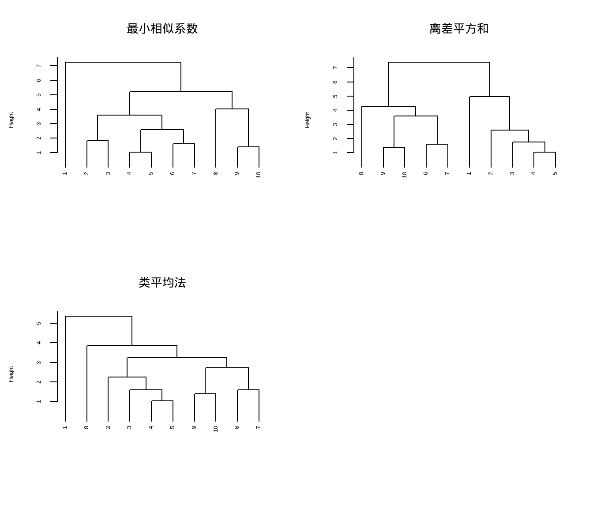
- 最小相似系数法：1号运动员是一类，其他9名运动员是另一类；
- 离差平方和法：1～5号运动员为一类，6～10号运动员为另一类；
- 类平均法：1号运动员是是一类，其他9名运动员是另一类；
简单分析下出现这种结果的原因：
- 最小相似系数法：只看两类间最近的两个点。只要1号与2-10号中任何一个人的距离都远，它就会把1号踢出去，剩下的自动抱团。
- 类平均法：计算所有点对的平均距离。虽然1号可能和2-10号中的某几个人距离尚可，但平均下来，1号拉低了整体的相似度，所以也被分离。
- 离差平方和法：它不追求孤立点，而是追求合并后的“方差增加最少”。这说明数据天然存在两极分化：1-5号内部差异小，6-10号内部差异小，但这两组之间差异大。
Ward法生成的类内离散度最小，意味着组内的运动员在生理指标上最相似，训练负荷和强度更容易统一控制。
由此说明，1号可能是离群值，下面我们画图探索一下。
首先是轮廓系数图：计算每个样本的“轮廓系数”（范围-1到1）。系数越接近1，说明该样本越在类中心；越接近-1，说明分错了类；0说明在类边界。
如果1号运动员真的是离群值，它的条形会非常短（接近0或负值），或者单独占据一个极窄的类别。
library(cluster)
# 以最小相似系数法为例
clusters_ward <- cutree(hc_complete, k = 2) # 分成2类
# 计算轮廓系数
sil_ward <- silhouette(clusters_ward, dist = d)
# 绘图
plot(sil_ward,
main = "Ward法聚类轮廓图 (k=2)",
xlab = "轮廓系数",
ylab = "运动员编号与类别",
col = rainbow(2)) # 自动配色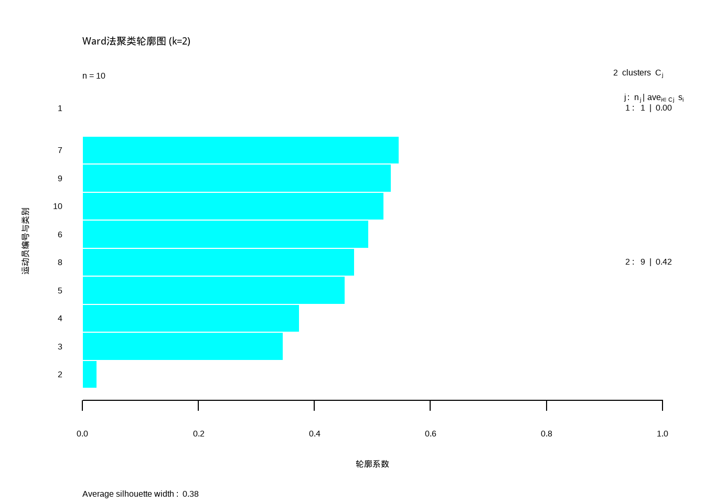
从图中可以看出，1号的轮廓系数非常小，基本接近0，所以1确实有异常。
下面再给大家画一个聚类热图，颜色深浅代表指标高低（例如红色代表数值高，蓝色代表数值低），如果1号运动员的颜色分布与其他所有人截然不同（比如别人是红蓝相间，他是全蓝），那就是明显的离群值。
# 给数据添加行名和列名
rownames(data21_3_scaled) <- paste("运动员", 1:nrow(data21_3_scaled), sep = "")
# 列名默认是 X1-X7，也手动加上
colnames(data21_3_scaled) <- c("X1_800m", "X2_立定跳", "X3_仰卧起坐",
"X4_3m折返", "X5_思维灵敏", "X6_运动知觉",
"X7_适竞感")
library(pheatmap)
# 绘制热力图，自动进行行列聚类
pheatmap(data21_3_scaled,
# 使用欧氏距离和Ward法（也可以改成 average）
clustering_distance_rows = "euclidean",
clustering_method = "ward.D2",
# 添加聚类树状图
treeheight_row = 30,
# 单元格颜色
color = colorRampPalette(c("blue", "white", "red"))(50),
# 标题和字体
main = "运动员指标热力图",
fontsize_row = 10,
fontsize_col = 10)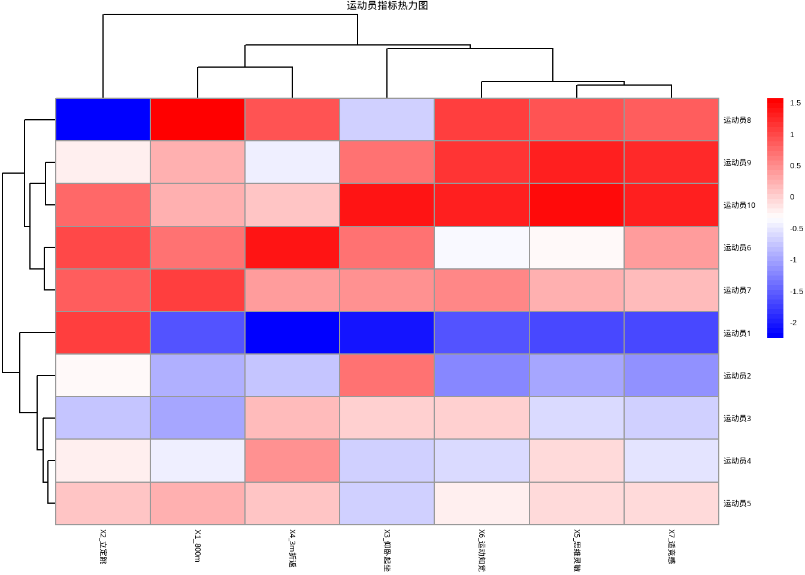
从图中可以看出，1号运动员呈明显的蓝色，和其他运动员明显不一样。
通过以上探索，我们最终选择离差平方和的结果，1-5号运动员为1类，6-10号运动员为另一类。
默认的聚类结果可视化比较简陋，这里简单介绍下更好看的可视化方式。
library(factoextra)
## Warning: package 'ggplot2' was built under R version 4.5.3
# 可视化离差平方和的结果
fviz_dend(hc_ward, k = 2,
rect = TRUE, # 增加边框
rect_border = "gray", # 边框颜色
rect_lty = 2, # 边框线条类型
lwd = 1, # 边框粗细
cex = 1.5, # 标签字体大小
main = "离差平方和聚类结果",
palette = "lancet")+ # 或者用k_colors = c("#1B9E77", "#D95F02")
theme(legend.position = "none")
## Warning: `aes_string()` was deprecated in ggplot2 3.0.0.
## ℹ Please use tidy evaluation idioms with `aes()`.
## ℹ See also `vignette("ggplot2-in-packages")` for more information.
## ℹ The deprecated feature was likely used in the factoextra package.
## Please report the issue at <https://github.com/kassambara/factoextra/issues>.
## Warning: Using `size` aesthetic for lines was deprecated in ggplot2 3.4.0.
## ℹ Please use `linewidth` instead.
## ℹ The deprecated feature was likely used in the factoextra package.
## Please report the issue at <https://github.com/kassambara/factoextra/issues>.
## Warning: The `<scale>` argument of `guides()` cannot be `FALSE`. Use "none" instead as
## of ggplot2 3.3.4.
## ℹ The deprecated feature was likely used in the factoextra package.
## Please report the issue at <https://github.com/kassambara/factoextra/issues>.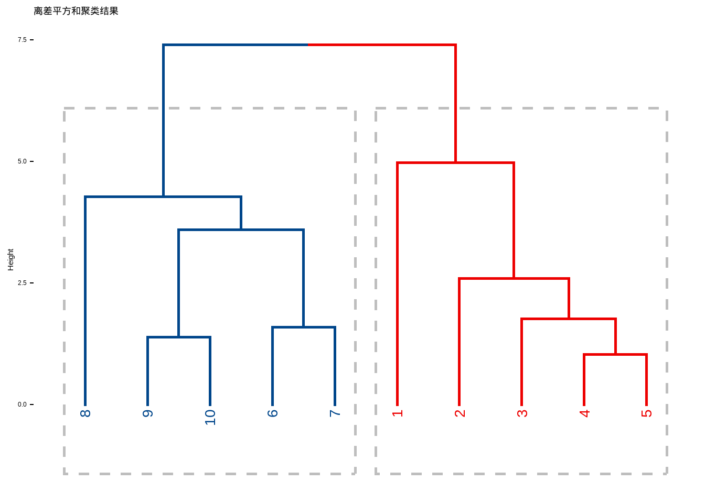
如果想要更加精美的聚类分析可视化，可以参考之前的几篇推文：
参考资料：
- R帮助文档
- https://r-graph-gallery.com/31-custom-colors-in-dendrogram.html
- https://www.gastonsanchez.com/visually-enforced/how-to/2012/10/0/Dendrograms/
27.2 K均值聚类
动态样品聚类的原理是：首先确定几个有代表性的样品，称之为凝聚点（质心），作为各类的重心，然后将其他样品逐一归类，归类的同时按某种规则修改各类重心直至分类合理为止。
动态样品聚类方法中最常用的一种是k-means法，此法的聚类步骤如下：
- 选择簇的数量 (K)：首先需要事先确定要划分的簇的数量K。
- 初始化质心 (Centroids)：随机选择K个数据点作为初始的簇中心，也称为“质心”。
- 分配数据点：计算每个数据点到K个质心的距离（通常使用欧氏距离），并将该点分配给距离它最近的那个质心所代表的簇。
- 重新计算质心：对于新形成的每一个簇，计算该簇中所有数据点的均值（平均值），并将这个均值作为该簇新的质心。
- 迭代直至收敛：重复执行步骤3（分配）和步骤4（更新）的过程。随着迭代进行，质心的位置会不断调整，直到质心的位置不再发生显著变化（即算法收敛），或者达到预设的最大迭代次数为止。
K均值聚类和层次聚类的区别如下：
| 对比维度 | K均值聚类 (K-Means) | 层次聚类 (Hierarchical) |
|---|---|---|
| 算法类型 | 划分式聚类 | 层次式聚类 |
| 簇的数量 | 必须预先指定 K 值 | 无需预先指定。可通过树状图（Dendrogram）在事后灵活决定最终的簇数。 |
| 时间复杂度 | 相对较低，适合处理大规模数据。 | 计算复杂度较高，不适合处理大规模数据。 |
| 结果可重现性 | 由于初始质心随机，结果可能不稳定。 | 算法过程是确定性的，结果具有可重现性。 |
| 簇的形状 | 倾向于生成大小相似、球状的簇。 | 可以发现不同大小和形状的簇，结构更灵活。 |
对例21-3的数据进行K均值聚类，指定k=2：
# 使用前也需要对数据进行标准化
kclust <- kmeans(data21_3_scaled, centers = 2, nstart = 25)
kclust
## K-means clustering with 2 clusters of sizes 5, 5
##
## Cluster means:
## X1_800m X2_立定跳 X3_仰卧起坐 X4_3m折返 X5_思维灵敏 X6_运动知觉
## 1 0.764899 0.04167721 0.5183961 0.4608886 0.6950956 0.7296949
## 2 -0.764899 -0.04167721 -0.5183961 -0.4608886 -0.6950956 -0.7296949
## X7_适竞感
## 1 0.8063665
## 2 -0.8063665
##
## Clustering vector:
## 运动员1 运动员2 运动员3 运动员4 运动员5 运动员6 运动员7 运动员8
## 2 2 2 2 2 1 1 1
## 运动员9 运动员10
## 1 1
##
## Within cluster sum of squares by cluster:
## [1] 17.86727 17.79473
## (between_SS / total_SS = 43.4 %)
##
## Available components:
##
## [1] "cluster" "centers" "totss" "withinss" "tot.withinss"
## [6] "betweenss" "size" "iter" "ifault"结果解读：
- 聚类数量与规模：算法将10名运动员分成了2个簇（Cluster），每个簇恰好包含5名运动员。
- Cluster 1: 运动员 6, 7, 8, 9, 10
- Cluster 2: 运动员 1, 2, 3, 4, 5
- 簇中心（Cluster Means）：也就是质心，由于对数据进行了标准化（scale），这里的数值是标准分数（Z-score），均值为0，标准差为1。正数代表“高于平均水平”，负数代表“低于平均水平”。
观察两个簇的中心点，你会发现它们几乎是完全镜像对称的（一组全是正数，另一组全是负数）。这说明两组运动员在各项指标上表现截然相反，这一点你通过观察上面的运动员指标热力图也可以发现！
簇内平方和(Within cluster sum of squares by cluster)分别是17.87和17.79。两个簇的数值非常接近，说明两个簇的内部离散程度（紧密度）差不多，没有哪个组特别松散。
组间方差占比(between_SS / total_SS = 43.4%)。说明聚类结果解释了数据总方差的43.4%。对于只有10个样本、7个维度的数据来说，这个解释力是中等偏上的。说明这两组确实存在显著的差异，但数据中还有约56.6%的变异是由组内差异或其他未测量因素造成的。
不管是哪一种聚类方法，factoextra配合factomineR都可以给出非常好看的可视化结果。有非常多的细节可以调整，大家在使用的时候可以自己尝试。
fviz_cluster(kclust, data = data21_3_scaled,
ellipse = T, # 增加椭圆
ellipse.type = "t", # 椭圆类型
geom = c("point", "text"), # 显示点和文字
repel = T, # 防止文字重叠
palette = "lancet", # 支持超多配色方案
main = "K均值聚类结果",
ggtheme = theme_bw() # 支持更换主题
)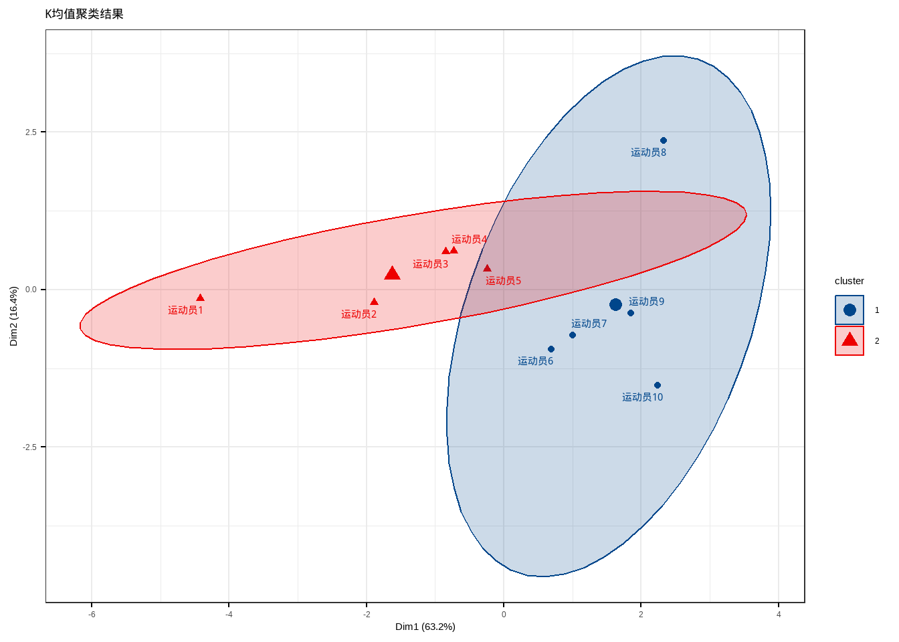
27.3 PAM
K均值聚类是基于均值的，所以对异常值很敏感。一个更稳健的方法是围绕中心点的划分（Partitioning Around Medoids, PAM）。用一个最有代表性的观测代表这一类(有点类似于主成分)。
K均值聚类一般使用欧几里得距离，而PAM可以使用任意的距离来计算。因此，PAM可以容纳混合数据类型，并且不仅限于连续变量。
我们用葡萄酒数据进行演示。该数据记录了三种不同的葡萄酒样本，共有178个样本。数据集中不包含缺失值，结构清晰，非常适合用于分类任务、聚类分析和主成分分析（PCA）。
# 该数据集位于rattle包
data(wine, package = "rattle")
str(wine)
## 'data.frame': 178 obs. of 14 variables:
## $ Type : Factor w/ 3 levels "1","2","3": 1 1 1 1 1 1 1 1 1 1 ...
## $ Alcohol : num 14.2 13.2 13.2 14.4 13.2 ...
## $ Malic : num 1.71 1.78 2.36 1.95 2.59 1.76 1.87 2.15 1.64 1.35 ...
## $ Ash : num 2.43 2.14 2.67 2.5 2.87 2.45 2.45 2.61 2.17 2.27 ...
## $ Alcalinity : num 15.6 11.2 18.6 16.8 21 15.2 14.6 17.6 14 16 ...
## $ Magnesium : int 127 100 101 113 118 112 96 121 97 98 ...
## $ Phenols : num 2.8 2.65 2.8 3.85 2.8 3.27 2.5 2.6 2.8 2.98 ...
## $ Flavanoids : num 3.06 2.76 3.24 3.49 2.69 3.39 2.52 2.51 2.98 3.15 ...
## $ Nonflavanoids : num 0.28 0.26 0.3 0.24 0.39 0.34 0.3 0.31 0.29 0.22 ...
## $ Proanthocyanins: num 2.29 1.28 2.81 2.18 1.82 1.97 1.98 1.25 1.98 1.85 ...
## $ Color : num 5.64 4.38 5.68 7.8 4.32 6.75 5.25 5.05 5.2 7.22 ...
## $ Hue : num 1.04 1.05 1.03 0.86 1.04 1.05 1.02 1.06 1.08 1.01 ...
## $ Dilution : num 3.92 3.4 3.17 3.45 2.93 2.85 3.58 3.58 2.85 3.55 ...
## $ Proline : int 1065 1050 1185 1480 735 1450 1290 1295 1045 1045 ...- Type(类型): 这是目标变量（类别标签），一个因子变量，取值为1、2或3，代表三种不同的葡萄酒类别。
- Alcohol(酒精): 酒精含量百分比。
- Malic(苹果酸): 苹果酸含量。
- Ash (灰分): 灰分含量。
- Alcalinity (碱度): 灰分碱度。
- Magnesium (镁): 镁含量。
- Phenols (总酚): 总酚含量。
- Flavanoids (黄酮类): 黄酮类化合物含量。
- Nonflavanoids (非黄酮类): 非黄酮类酚含量。
- Proanthocyanins (原花青素): 原花青素含量。
- Color (颜色强度): 颜色强度。
- Hue (色调): 色调。
- Dilution (稀释度): 稀释葡萄酒的OD280/OD315 吸光度比值。
- Proline (脯氨酸): 脯氨酸含量。
PAM聚类可以通过cluster包中的pam()实现。
library(cluster)
set.seed(123)
fit.pam <- pam(wine[-1,],
k=3 # 聚为3类
, stand = T # 聚类前进行标准化
)
fit.pam
## Medoids:
## ID Type Alcohol Malic Ash Alcalinity Magnesium Phenols Flavanoids
## 36 35 1 13.48 1.81 2.41 20.5 100 2.70 2.98
## 107 106 2 12.25 1.73 2.12 19.0 80 1.65 2.03
## 149 148 3 13.32 3.24 2.38 21.5 92 1.93 0.76
## Nonflavanoids Proanthocyanins Color Hue Dilution Proline
## 36 0.26 1.86 5.10 1.04 3.47 920
## 107 0.37 1.63 3.40 1.00 3.17 510
## 149 0.45 1.25 8.42 0.55 1.62 650
## Clustering vector:
## 2 3 4 5 6 7 8 9 10 11 12 13 14 15 16 17 18 19 20 21
## 1 1 1 1 1 1 1 1 1 1 1 1 1 1 1 1 1 1 1 1
## 22 23 24 25 26 27 28 29 30 31 32 33 34 35 36 37 38 39 40 41
## 1 1 1 1 1 1 1 1 1 1 1 1 1 1 1 1 1 1 1 1
## 42 43 44 45 46 47 48 49 50 51 52 53 54 55 56 57 58 59 60 61
## 1 1 1 1 1 1 1 1 1 1 1 1 1 1 1 1 1 1 2 2
## 62 63 64 65 66 67 68 69 70 71 72 73 74 75 76 77 78 79 80 81
## 2 2 1 2 1 2 2 2 1 2 1 2 1 1 2 2 2 2 1 2
## 82 83 84 85 86 87 88 89 90 91 92 93 94 95 96 97 98 99 100 101
## 2 2 3 2 2 2 2 2 2 2 2 2 2 2 1 1 2 1 2 2
## 102 103 104 105 106 107 108 109 110 111 112 113 114 115 116 117 118 119 120 121
## 2 2 2 2 2 2 2 2 1 2 2 2 2 2 2 2 2 2 2 2
## 122 123 124 125 126 127 128 129 130 131 132 133 134 135 136 137 138 139 140 141
## 1 2 2 2 2 2 2 2 2 3 3 3 3 3 3 3 3 3 3 3
## 142 143 144 145 146 147 148 149 150 151 152 153 154 155 156 157 158 159 160 161
## 3 3 3 3 3 3 3 3 3 3 3 3 3 3 3 3 3 3 3 3
## 162 163 164 165 166 167 168 169 170 171 172 173 174 175 176 177 178
## 3 3 3 3 3 3 3 3 3 3 3 3 3 3 3 3 3
## Objective function:
## build swap
## 3.537365 3.504175
##
## Available components:
## [1] "medoids" "id.med" "clustering" "objective" "isolation"
## [6] "clusinfo" "silinfo" "diss" "call" "data"结果解读：
- 核心结果：聚类中心 (Medoids)
PAM算法与K-means最大的不同在于，它的中心点（Medoids）必须是数据集中真实存在的样本，而不是计算出来的平均值。我们可以直接查看这些“代表酒样”的特征。该结果找到了3个中心点，对应的样本ID分别是36、107、149（注意R中索引从1开始，所以ID减1）：
- 簇1的中心 (样本36)：酒精含量较高(Alcohol=13.48)，苹果酸中等，颜色强度中等。这是一个典型的高酒精度葡萄酒样本，代表了第一类葡萄酒的化学特征。
- 簇2的中心(样本107)：酒精含量较低(Alcohol=12.25)，苹果酸较低，原花青素较低。相比第一类，这类酒的酒精度和部分酸度指标更低，代表了第二类风格。
- 簇3的中心(样本149)：酒精含量中等(Alcohol=13.32)，但苹果酸非常高(Malic=3.24)，非黄酮类酚含量较高。这类酒最显著的特点是高苹果酸，这可能代表了特定葡萄品种的酸度特征。
- 聚类分配 (Clustering vector)
这部分输出显示了每个样本（按顺序）被分配到了哪个簇。从输出可以看出，前50多个样本大部分被分到了第1类，中间一段主要在第2类，最后一批主要在第3类。
PAM算法将178个样本划分为了3个簇。为了评估这种划分是否合理，我们通常需要进一步的统计指标（如轮廓系数或兰德指数），但仅从分配的连续性来看，算法确实识别出了数据中的分组结构。
- 目标函数 (Objective function)
这是算法优化过程中的统计量，用于衡量聚类的质量（总代价，越小越好）：
- build(3.537)：初始化阶段（构建阶段）的目标函数值。
- swap(3.504)：交换优化阶段后的目标函数值。
从3.537下降到3.504，说明算法通过“交换”中心点的操作成功降低了总距离（误差），找到了一个更优的解，算法收敛。
结果可视化：
clusplot(fit.pam, main = "PAM cluster")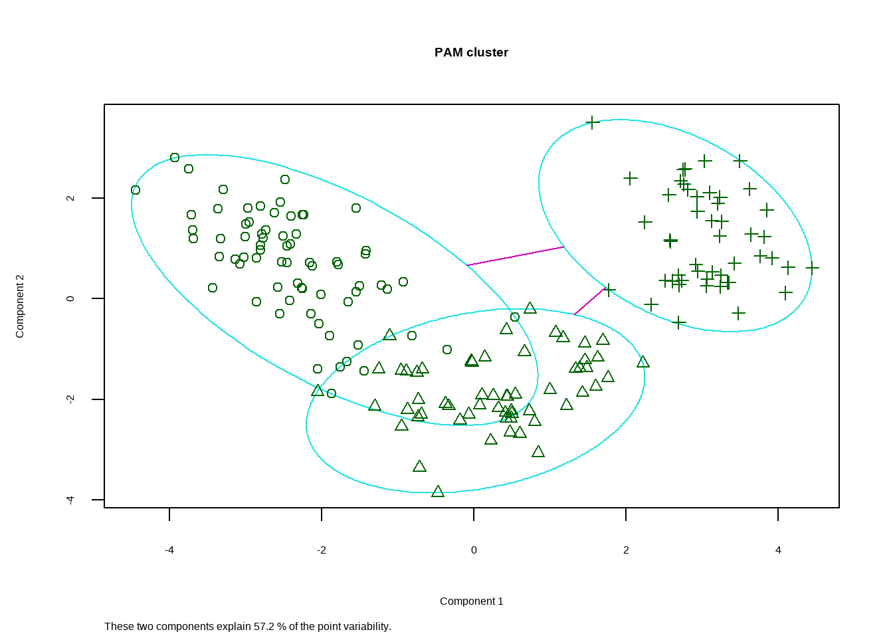
同样也可以用factoextra包实现可视化。
fviz_cluster(fit.pam,
ellipse = T, # 增加椭圆
ellipse.type = "t", # 椭圆类型
geom = "point", # 只显示点不要文字
palette = "aaas", # 支持超多配色方案
ggtheme = theme_bw() # 支持更换主题
)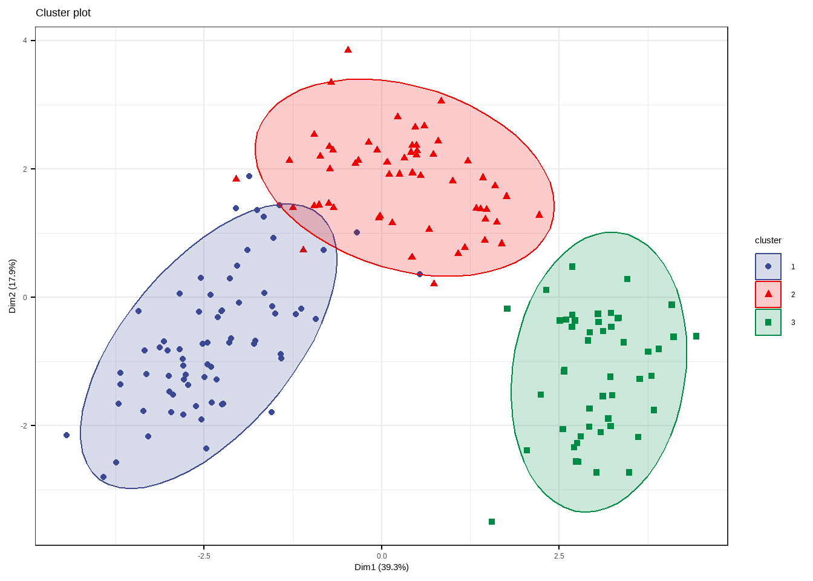
如何判断聚类结果的好坏呢？可以通过轮廓系数判断（轮廓系数上文已介绍过）：
# 计算轮廓系数
sil <- silhouette(fit.pam)
# 查看平均轮廓宽度
avg_sil <- summary(sil)$avg.width
print(paste("平均轮廓系数:", round(avg_sil, 3)))
## [1] "平均轮廓系数: 0.286"
# 绘制轮廓图
plot(sil, main = "PAM聚类轮廓系数图",
xlab = "轮廓系数",
ylab = "葡萄酒样本",
col = rainbow(3)) # 自动配色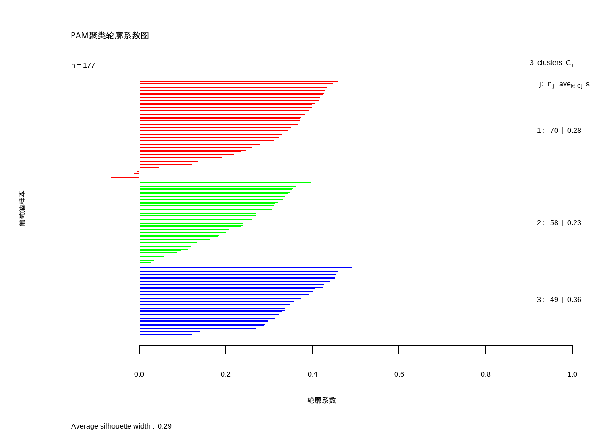
27.4 有序样品聚类
前面讲到的样品聚类分析方法，适用于无序样品的分类。在科学研究中存在另一类型的资料，各样品在时域或空域存在自然顺序，如生长发育资料的年龄顺序、发病率的年代顺序和地理位置，称这种样品为有序样品。
对有序样品分类时要考虑到样品的顺序特性这个前提条件，分类时不破坏样品间的顺序，由此形成的样品聚类方法称为有序样品聚类（ordinal clustering methods）。本节将介绍有序样品的Fisher最优分割法。
Fisher最优分割法的简单步骤如下：
- 定义类直径（离差平方和）
- 定义总损失函数
- 动态规划递推求最小损失
- 回溯确定分割点
- 输出分类结果
孙振球《医学统计学》第4版例21-4：调查了一批牧羊犬1.5月、2个月、4个月、6个月、8个月、10个月、12个月平均体长，试用有序样品聚类法对牧羊犬生长发育分期。
# 读取数据
data21_4 <- foreign::read.spss("datasets/例21-04.sav",reencode = "gbk",
to.data.frame = T)
# 这是一个1维数据，分别是各个月份的平均体长
data21_4
## 体长
## 1 39.4
## 2 41.2
## 3 59.1
## 4 68.4
## 5 74.9
## 6 75.5
## 7 79.2首先给大家介绍的这个方法代码来自于网络，代码参考：https://gutun.plus/study/fisher%E6%9C%89%E5%BA%8F%E6%A0%B7%E6%9C%AC%E8%81%9A%E7%B1%BB%E7%9A%84r%E5%87%BD%E6%95%B0/
这段代码实现了Fisher最优分割法：
OrdinalCluster <- function(x, K = 0, D = NULL, pic = FALSE){
if(!is.data.frame(x)){
stop("x must be a data frame.")
}
n <- nrow(x)
if(K == 0){
K <- n
}
else{
if(as.integer(K) != as.numeric(K)) stop("K must be a integer.")
if(K < 0) stop("K must be positive.")
if(K > n) stop("K must be less than the sample size.")
}
if(is.null(D)){
D <- function(x, i ,j){
xp <- as.data.frame(x[i:j,])
x_mean <- colMeans(xp)
x_mean_m <- matrix(rep(x_mean, nrow(xp)), nrow(xp), byrow = TRUE)
return(sum((xp-x_mean_m)^2))
}
}
D_matrix <- matrix(NA, n, n)
for (i in 1:n) {
for (j in 1:i) {
D_matrix[i,j] <- D(x, i, j)
}
}
D_matrix[upper.tri(D_matrix)] <- t(D_matrix)[upper.tri(D_matrix)]
e_matrix <- matrix(NA, n, K)
j <- matrix(NA, n, K)
for (p in 1:K) {
for (i in p:n) {
if(p == 1){
e_matrix[i,p] <- D_matrix[1,i]
j[i,p] <- 1
}
else{
e_p <- double(i-p+1)
for (t in p:i) {
e_p[t-p+1] <- e_matrix[t-1, p-1] + D_matrix[t, i]
}
j[i,p] <- which.min(e_p) + p - 1
e_matrix[i,p] <- e_p[j[i,p]-p+1]
}
}
}
e_min <- e_matrix[n, ]
P <- matrix(NA, K, n)
for (p in 1:K) {
for (i in p:1) {
if(i == p){
P[p,i] <- j[n,p]
}
else{
P[p,i] <- j[P[p,i+1]-1, i]
}
}
}
result <- list()
result$D_matrix <- D_matrix
if(K == 0){
result$e_min <- e_min
result$P <- P
}
else{
result$P <- P[K,1:K]
}
if(pic == TRUE){
e_pic <- plot(2:length(e_min),e_min[-1], type = "l", xlab = "K", ylab = "e_min")
result$e_pic <- e_pic
}
return(result)
}参数说明如下：
x必须是一个数据框，它的每一行作为一个样本。对于一元的样本请使用as.data.frame(x)进行转换。K是样本聚类数量，如果不指定，则默认考虑所有聚类可能。D是类的直径函数，默认为类内样本与其中心欧氏距离的平方和，自定义函数的参数格式为D(x,i,j)，其中x为样本，i,j为样本序号。pic为是否画出\(K-\min e(P(n,K))\)图来确定聚类个数，默认为FALSE。如果指定了K，那么只能画出不超过K个点的折线图。
返回值说明如下：
D_matrix是包括了所有可能分类的直径。e_min只有当没有指定K时才会返回，它表示样本在不同聚类数量下的误差函数的值。这里误差函数使用的各聚类的直径之和。P是聚类的划分，记录了各个类的第一个样本的序号。没有指定K时返回包含所有可能聚类数的划分矩阵，否则返回聚成K类的划分。e_pic是\(K-\min e(P(n,K))\)图，只有在pic=TRUE时才会返回。
下面使用该函数进行Fisher最优分割法，先不规定聚类的数量：
# 不规定聚类数量
OrdinalCluster(data21_4,pic = TRUE)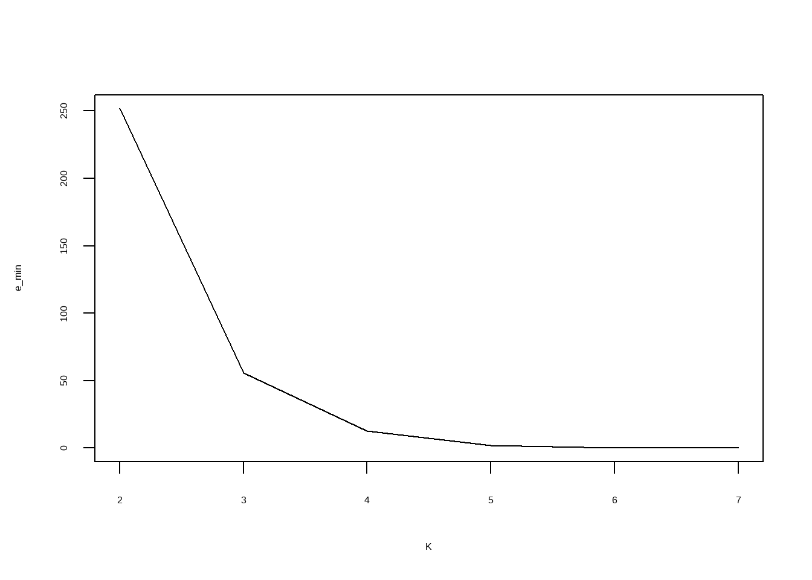
## $D_matrix
## [,1] [,2] [,3] [,4] [,5] [,6] [,7]
## [1,] 0.0000 1.6200 237.2467 594.76750 1013.38000 1311.05500 1635.31429
## [2,] 1.6200 0.0000 160.2050 382.24667 643.58000 814.10800 1011.22833
## [3,] 237.2467 160.2050 0.0000 43.24500 126.12667 174.52750 250.18800
## [4,] 594.7675 382.2467 43.2450 0.00000 21.12500 31.00667 60.46000
## [5,] 1013.3800 643.5800 126.1267 21.12500 0.00000 0.18000 10.84667
## [6,] 1311.0550 814.1080 174.5275 31.00667 0.18000 0.00000 6.84500
## [7,] 1635.3143 1011.2283 250.1880 60.46000 10.84667 6.84500 0.00000
##
## $P
## [1] 1 2 3 4 5 6 7结果给出了D_matrix（内部计算方式和书中略有不同，故数值不完全一样，不影响结果准确性）和P，以及一个拐点图，我们通过观察拐点图可知，当聚类数量为4时，效果就不错了，聚类数量更多时变化基本不大。
所以确定聚类数量为4，重新进行聚类：
# 规定聚类数量为4
OrdinalCluster(data21_4,pic = FALSE, K=4)
## $D_matrix
## [,1] [,2] [,3] [,4] [,5] [,6] [,7]
## [1,] 0.0000 1.6200 237.2467 594.76750 1013.38000 1311.05500 1635.31429
## [2,] 1.6200 0.0000 160.2050 382.24667 643.58000 814.10800 1011.22833
## [3,] 237.2467 160.2050 0.0000 43.24500 126.12667 174.52750 250.18800
## [4,] 594.7675 382.2467 43.2450 0.00000 21.12500 31.00667 60.46000
## [5,] 1013.3800 643.5800 126.1267 21.12500 0.00000 0.18000 10.84667
## [6,] 1311.0550 814.1080 174.5275 31.00667 0.18000 0.00000 6.84500
## [7,] 1635.3143 1011.2283 250.1880 60.46000 10.84667 6.84500 0.00000
##
## $P
## [1] 1 3 4 5P是聚类的划分，记录了各个类的第一个样本的序号。本次结果中的1,3,4,5意思是：
- 第1类的第一个样本是1号，
- 第2类的第一个样本是3号，
- 第3类的第一个样本是4号，
- 第4类的第一个样本是5号。
因此，7个月的体长数据聚类结果是：
- 第1类:对应1.5个月和2个月。这表示在出生后的前2个月，牧羊犬的生长速度相对平缓，属于生长初期。
- 第2类:对应4个月。这是一个快速增长期，体长从41.2cm跃升至59.1cm。
- 第3类:对应6个月。生长速度依然较快，但开始放缓，体长达到68.4cm。
- 第4类: 对应8个月、10个月、12个月。这三个月的体长变化很小（74.9cm -> 75.5cm -> 79.2cm），说明生长进入稳定期或平台期，属于生长后期。
下面介绍第2种方法，借助OHPL包实现。
data21_4 <- data.frame(`体长`=c(39.4,41.2,59.1,68.4,74.9,75.5,79.2))首先把数据变成1维度的矩阵，然后使用dlc()函数计算所需数据，主要就是3个矩阵：
- D矩阵：距离矩阵，但是和书中的D矩阵计算方法不一样，书里的D矩阵是类直径；
- L矩阵：损失函数矩阵，L[N,k]（其中N是总样本数）的值就是当分类数为k时的总损失。随着k增大，L会减小，利用这个关系可以画出拐点图。
- C矩阵：记录了如何分割的历史信息，或者叫记录分割点。
library(OHPL)
## Warning: package 'OHPL' was built under R version 4.5.2
X <- as.matrix(data21_4$体长) # 把数据变成矩阵
C <- dlc(X, maxk = 6)$C # 提取C矩阵
L <- dlc(X, maxk = 6)$L # 提取L矩阵
L
## 2 3 4 5 6
## 2 0.0000 0.00000 0.00000 0.00 0.00
## 3 1.6200 0.00000 0.00000 0.00 0.00
## 4 44.8650 1.62000 0.00000 0.00 0.00
## 5 127.7467 22.74500 1.62000 0.00 0.00
## 6 176.1475 32.62667 1.80000 0.18 0.00
## 7 251.8080 55.71167 12.46667 1.80 0.18根据这个L矩阵，我们可以画出拐点图，方便确认到底分为几类：
loss_values <- L[6,] # 提取第7行，所有列的值
k_values <- 2:6 # 分类数量是2-6
# 2. 绘制拐点图
plot(k_values, loss_values,
type = "b", # 绘制点和线
pch = 19, # 点的形状
xlab = "分类数量 (k)",
ylab = "损失函数值 ",
main = "有序样品聚类拐点图")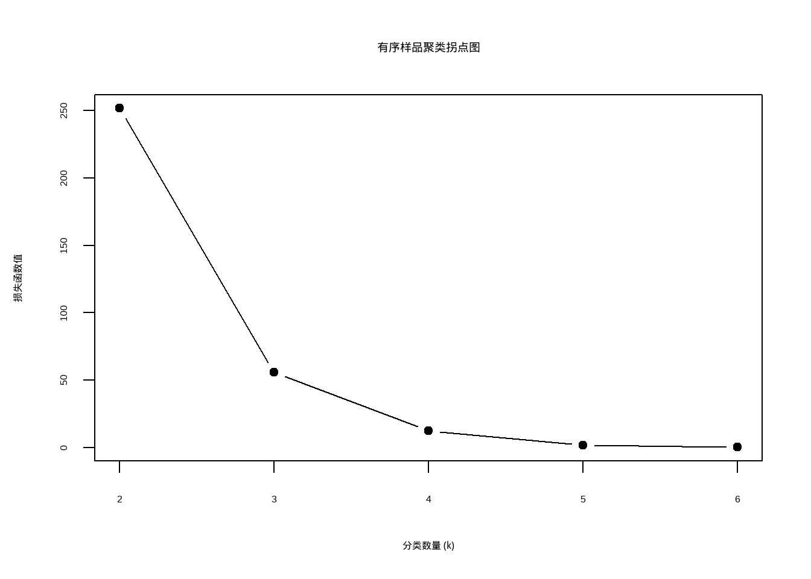
通过这个图可知，分为4类比较合适，因此确定K=4，然后使用这个值再进行Fisher最优分割法：
F <- FOP(X, 4, C) # 进行聚类
F
## [1] 1 1 2 3 4 4 4结果也是和上面的方法一样的。
27.5 两步聚类
孙振球《医学统计学》第5版介绍了两步聚类。
两步聚类是针对快速处理大数据集而发展出的智能聚类法。两步聚类顾名思义就是将聚类过程分成两个步骤进行，第一步是预聚类，也就是初步归类，此时最大类别数可以由用户自己指定；第二步是正式聚类，在第一步结果的基础上进行再聚类并确定最终的聚类方案。
这个两步聚类在SPSS中专门有一个菜单，叫二阶聚类，在R中没有完全对应的R包，但是这个分两步操作的思想我们已经介绍过很多次了，就比如前面介绍的有序样品聚类，我们其实就是分了两步，先不规定聚类数，然后根据某种评判标准（比如拐点图）确定分为几类，再进行最后的聚类。
所以我给大家介绍一个非常成熟的R包NbClust，可以帮我们确定最佳的聚类个数。
还是以葡萄酒数据进行演示。
# 该数据集位于rattle包
data(wine, package = "rattle")
str(wine)
## 'data.frame': 178 obs. of 14 variables:
## $ Type : Factor w/ 3 levels "1","2","3": 1 1 1 1 1 1 1 1 1 1 ...
## $ Alcohol : num 14.2 13.2 13.2 14.4 13.2 ...
## $ Malic : num 1.71 1.78 2.36 1.95 2.59 1.76 1.87 2.15 1.64 1.35 ...
## $ Ash : num 2.43 2.14 2.67 2.5 2.87 2.45 2.45 2.61 2.17 2.27 ...
## $ Alcalinity : num 15.6 11.2 18.6 16.8 21 15.2 14.6 17.6 14 16 ...
## $ Magnesium : int 127 100 101 113 118 112 96 121 97 98 ...
## $ Phenols : num 2.8 2.65 2.8 3.85 2.8 3.27 2.5 2.6 2.8 2.98 ...
## $ Flavanoids : num 3.06 2.76 3.24 3.49 2.69 3.39 2.52 2.51 2.98 3.15 ...
## $ Nonflavanoids : num 0.28 0.26 0.3 0.24 0.39 0.34 0.3 0.31 0.29 0.22 ...
## $ Proanthocyanins: num 2.29 1.28 2.81 2.18 1.82 1.97 1.98 1.25 1.98 1.85 ...
## $ Color : num 5.64 4.38 5.68 7.8 4.32 6.75 5.25 5.05 5.2 7.22 ...
## $ Hue : num 1.04 1.05 1.03 0.86 1.04 1.05 1.02 1.06 1.08 1.01 ...
## $ Dilution : num 3.92 3.4 3.17 3.45 2.93 2.85 3.58 3.58 2.85 3.55 ...
## $ Proline : int 1065 1050 1185 1480 735 1450 1290 1295 1045 1045 ...
df <- scale(wine[,-1]) # 去掉第一列进行K均值聚类时，需要在一开始就指定聚类的个数，我们通过NbClust包实现这个过程。
library(NbClust)
set.seed(123)
nc <- NbClust(df, min.nc = 2, max.nc = 15, # 聚类个数选择2~15
method = "kmeans")# 方法选择kmeans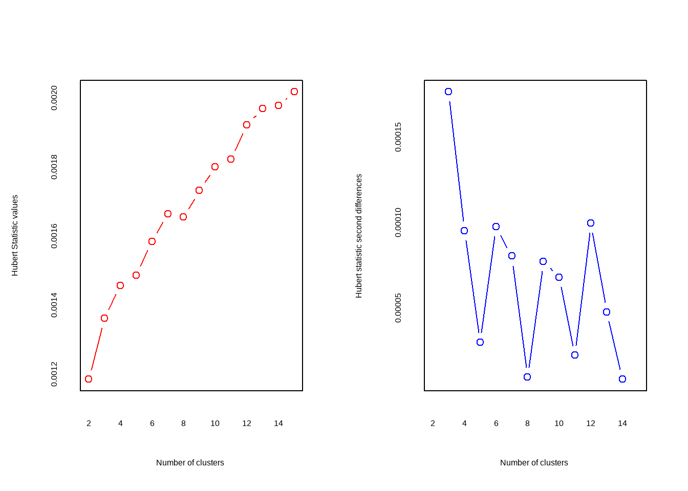
## *** : The Hubert index is a graphical method of determining the number of clusters.
## In the plot of Hubert index, we seek a significant knee that corresponds to a
## significant increase of the value of the measure i.e the significant peak in Hubert
## index second differences plot.
## 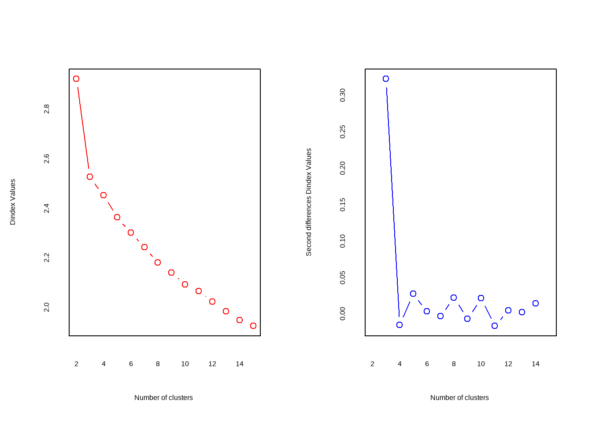
## *** : The D index is a graphical method of determining the number of clusters.
## In the plot of D index, we seek a significant knee (the significant peak in Dindex
## second differences plot) that corresponds to a significant increase of the value of
## the measure.
##
## *******************************************************************
## * Among all indices:
## * 2 proposed 2 as the best number of clusters
## * 19 proposed 3 as the best number of clusters
## * 1 proposed 14 as the best number of clusters
## * 1 proposed 15 as the best number of clusters
##
## ***** Conclusion *****
##
## * According to the majority rule, the best number of clusters is 3
##
##
## *******************************************************************结果中的两个指数简单介绍一下：
Hubert指数(Hubert Index)：确定数据聚类时，应该分成多少个簇最合适。
- 方法：计算不同聚类数量（比如从2类到10类）下的Hubert指数值，并绘制成折线图。
- 判断标准（如何找最佳聚类数）：在Hubert指数的折线图中，我们要寻找一个明显的“肘部”（knee）。这个“肘部”代表了指标值发生显著增加的位置。更具体的技术手段是：观察Hubert指数的二阶差分图（second differences plot），那个显著的峰值（peak）所对应的位置，就是最佳的聚类数量。
D指数(D Index)：也是为了确定最佳聚类数。
- 方法：计算不同聚类数量下的D指数值并绘图。
- 判断标准：在D指数的折线图中，同样寻找明显的“肘部”（knee）。这个“肘部”对应着指标值的显著增加。通过查看D指数的二阶差分图，那个显著的峰值对应的位置即为最优解。
结果中给出了划分依据以及最佳的聚类数目为3个，可以画图查看结果：
table(nc$Best.nc[1,])
##
## 0 1 2 3 14 15
## 2 1 2 19 1 1
barplot(table(nc$Best.nc[1,]),
xlab = "聚类数目",
ylab = "评判准则个数"
)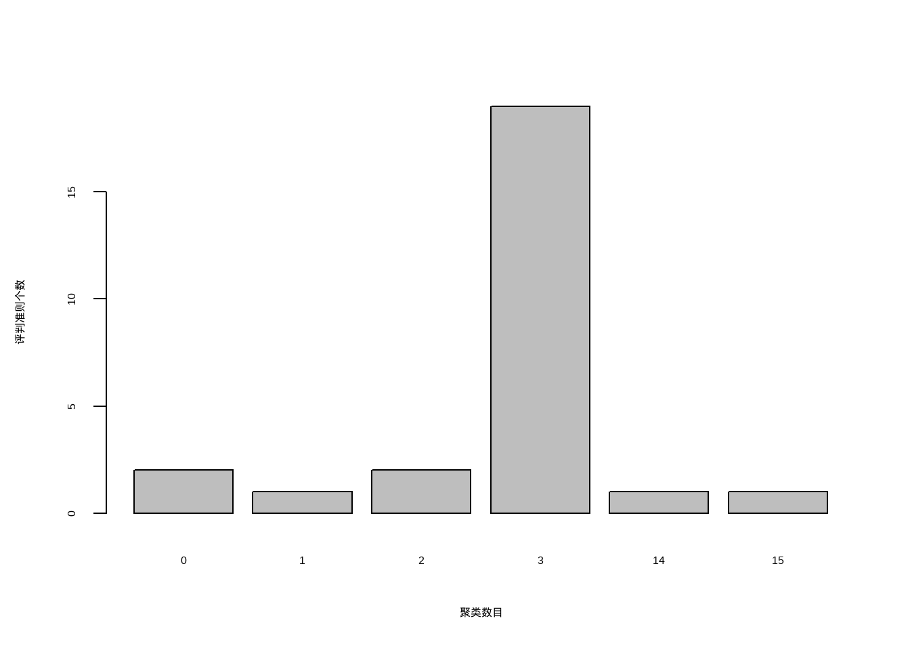
可以看到聚类数目为3是最佳的选择。
确定最佳聚类个数过程也可以通过非常好用的R包factoextra实现。
library(factoextra)
set.seed(123)
fviz_nbclust(df, kmeans, k.max = 15)
## Warning: The `size` argument of `element_line()` is deprecated as of ggplot2 3.4.0.
## ℹ Please use the `linewidth` argument instead.
## ℹ The deprecated feature was likely used in the ggpubr package.
## Please report the issue at <https://github.com/kassambara/ggpubr/issues>.
## Warning: The `size` argument of `element_rect()` is deprecated as of ggplot2 3.4.0.
## ℹ Please use the `linewidth` argument instead.
## ℹ The deprecated feature was likely used in the ggpubr package.
## Please report the issue at <https://github.com/kassambara/ggpubr/issues>.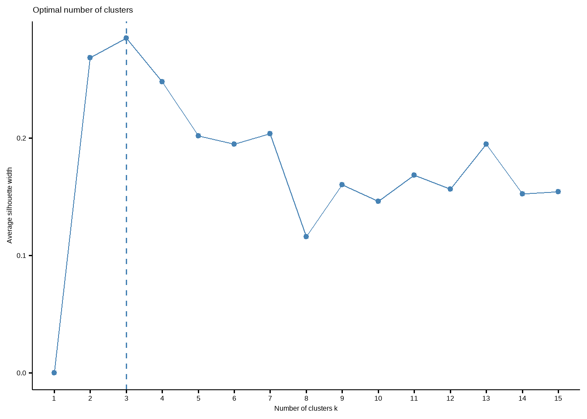
这个结果给出的最佳聚类个数也是3个。
下面进行K均值聚类，聚类数目设为3。
set.seed(123)
fit.km <- kmeans(df, centers = 3, nstart = 25)
fit.km
## K-means clustering with 3 clusters of sizes 51, 62, 65
##
## Cluster means:
## Alcohol Malic Ash Alcalinity Magnesium Phenols
## 1 0.1644436 0.8690954 0.1863726 0.5228924 -0.07526047 -0.97657548
## 2 0.8328826 -0.3029551 0.3636801 -0.6084749 0.57596208 0.88274724
## 3 -0.9234669 -0.3929331 -0.4931257 0.1701220 -0.49032869 -0.07576891
## Flavanoids Nonflavanoids Proanthocyanins Color Hue Dilution
## 1 -1.21182921 0.72402116 -0.77751312 0.9388902 -1.1615122 -1.2887761
## 2 0.97506900 -0.56050853 0.57865427 0.1705823 0.4726504 0.7770551
## 3 0.02075402 -0.03343924 0.05810161 -0.8993770 0.4605046 0.2700025
## Proline
## 1 -0.4059428
## 2 1.1220202
## 3 -0.7517257
##
## Clustering vector:
## [1] 2 2 2 2 2 2 2 2 2 2 2 2 2 2 2 2 2 2 2 2 2 2 2 2 2 2 2 2 2 2 2 2 2 2 2 2 2
## [38] 2 2 2 2 2 2 2 2 2 2 2 2 2 2 2 2 2 2 2 2 2 2 3 3 1 3 3 3 3 3 3 3 3 3 3 3 2
## [75] 3 3 3 3 3 3 3 3 3 1 3 3 3 3 3 3 3 3 3 3 3 2 3 3 3 3 3 3 3 3 3 3 3 3 3 3 3
## [112] 3 3 3 3 3 3 3 1 3 3 2 3 3 3 3 3 3 3 3 1 1 1 1 1 1 1 1 1 1 1 1 1 1 1 1 1 1
## [149] 1 1 1 1 1 1 1 1 1 1 1 1 1 1 1 1 1 1 1 1 1 1 1 1 1 1 1 1 1 1
##
## Within cluster sum of squares by cluster:
## [1] 326.3537 385.6983 558.6971
## (between_SS / total_SS = 44.8 %)
##
## Available components:
##
## [1] "cluster" "centers" "totss" "withinss" "tot.withinss"
## [6] "betweenss" "size" "iter" "ifault"结果很详细，就不再重复介绍了。